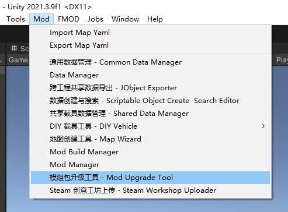
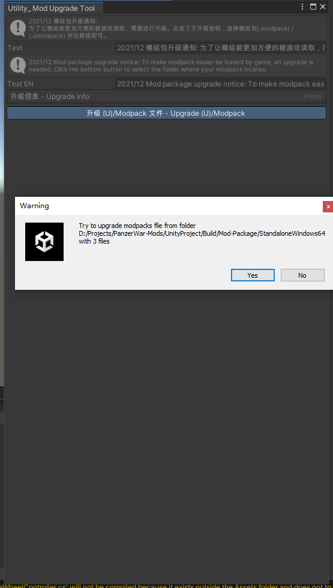
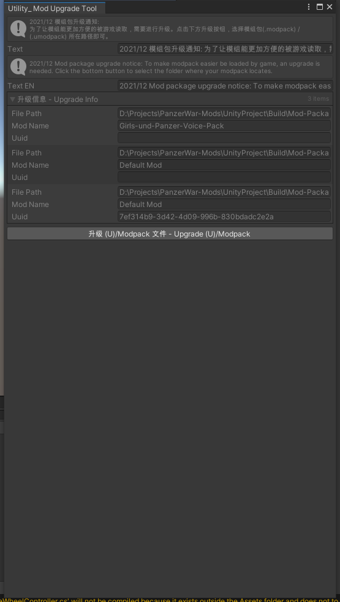

Umodpack 升级公告归档 中文 | English 这次升级要求更新 MiddleLayer，并升级或重新打包已有的加密模组。以下截图来自当时的工具。 当时的模组升级工具 对已经完成打包的加密模组，当时的工具提供一键升级，无需重新打包。    重打包 当时重新生成模组包会使用新版 package.json 格式。 现在怎么做 保留了源工程时，可按 项目初始化 打开兼容环境，按目标平台重建。加密选项见 加密模组。